Routines UX review
Routines work, but they are built from two different apps. The home, the site picker and the story picker are designed panes. The editor, the schedule cards, run details and every confirm are raw terminal text in the top-left corner of an empty window. Making one routine crosses that line three times and ends in the terminal. The plan rebuilds every routines screen from the launcher’s own tile, bar and boxes, shortens the path, and makes a run something you can watch, stop and listen to.
Every screenshot below is the real app, driven with real keys on 12 Nov 2026. The proposed screens are the app’s own launcher pane rendering routine data.
Today: making one routine
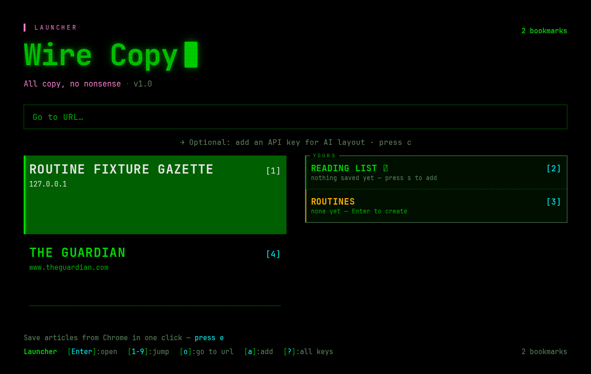
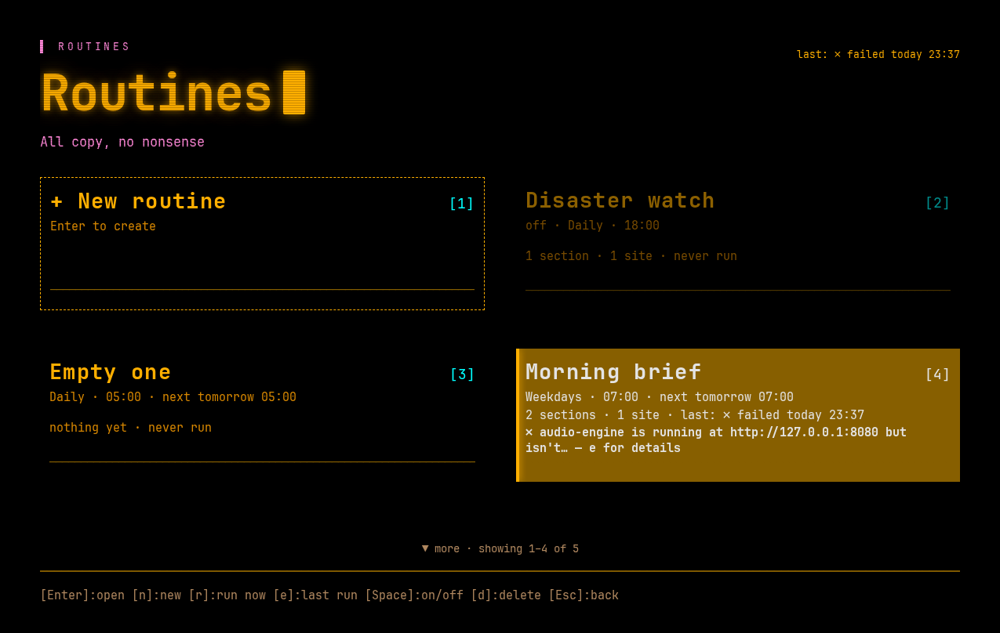
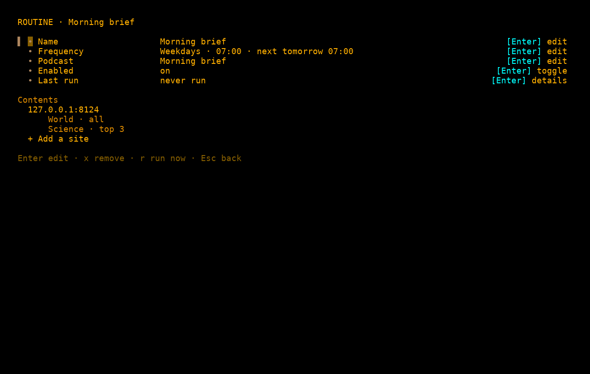


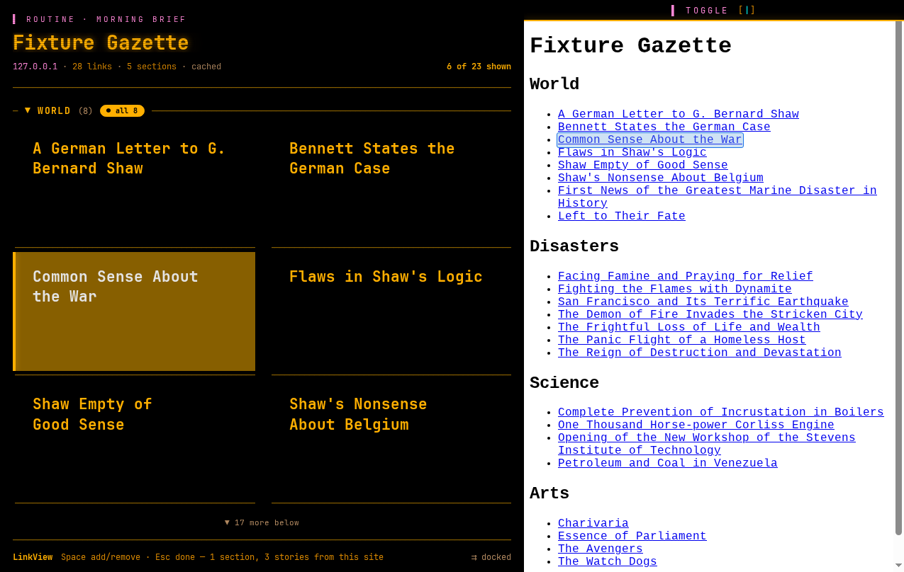
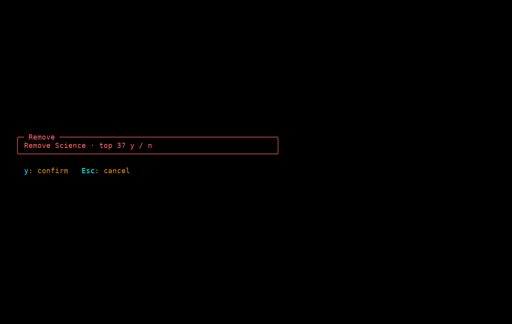


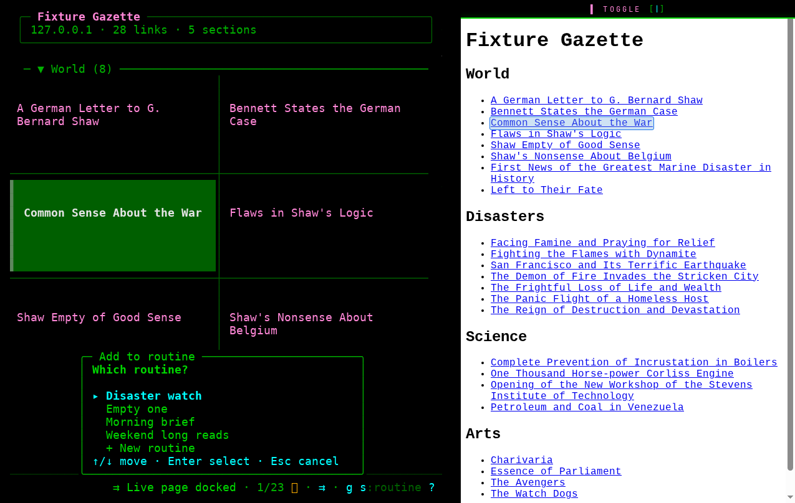
g s on a story list. The designed story pane is swapped for the raw terminal list so a small card can draw.What is wrong
Look
- L1Two visual languages in one task. Editor, schedule cards, run details and confirms leave the pane and draw 18px terminal text.RoutineEditorHandler.cs:58 · RoutineRunDetailsHandler.cs:69 · RoutineEditorCards.cs:100
- L2Three footer formats:
[Enter]:openon home,Enter edit · x removein the editor,↑/↓ move · Enter selecton cards. Only the launcher colours its keys. - L3Two selection styles on the editor: settings rows light a bullet, content rows get a bar that stops short of the right edge.
- L4Home shows the launcher tagline under “Routines” and says nothing about what runs next.launcher.html:91 falls back to “All copy, no nonsense”
- L5The empty home is one card in a void. With routines, the window holds four cards and pages the rest.
- L6No wayfinding. Each screen invents its own heading, so depth is never visible.
- L7Add a site is the full launcher in amber, titled “Wire Copy”, with setup hints and two tiles that are not sites.RoutineSitePicker.cs:129 paints RenderLauncher
- L8Every confirm blanks the screen and draws a small red box, so you lose sight of what you are removing.
Flow
- W1Up to eleven screens to make and run one routine. Frequency alone is up to three.
- W2“+ New routine” saves an empty routine before it is named. Backing out leaves “New routine” behind, due daily at 05:00.RoutinesHomeHandler.cs:219-221
- W3
rdoes three different things. Home: background, the card says “running…”. Editor: the whole screen stops taking keys until the run ends. Details: background. No progress anywhere, and no run can be cancelled.RoutineEditorHandler.cs:296 · every caller passes CancellationToken.None - W4The schedule is a promise the app does not keep. A routine runs only if Wire Copy is open in the minute it is due. Otherwise the run is recorded as “skipped”, which raises no alert. The default time is 05:00. The card still says “next tomorrow 05:00”. Seen live: opening the app at 23:37 logged “Failed · App was not open within the recipe’s grace window” for the 07:00 slot.NextDueCalculator.cs:35 · SchedulerHostedService.cs:183-193
- W5A good run is a dead end. “Saved to” and “Feed” are plain text. No play, no copy feed URL, no show file.RoutineRunDetailsHandler.cs:200-221
- W6Earlier runs are listed but cannot be opened.RoutineRunDetailsHandler.cs:446-455
- W7Sections cannot be reordered, though the model supports it. Story count can only be changed by reopening the site.
- W8Home is alphabetical with “+ New routine” always first, so
1and the first Enter create instead of open. - W9A run started by hand names its episode with an internal key: “Weekend long reads run-now@2026-11-12T23.42.49#1”. That is what a podcast app shows.
Keys
- K1Remove is
don home andxin the editor. Elsewherexcancels a run. - K2
eopens the last run. It has no mnemonic and exists because Enter does not lead there. - K3Run details advertises keys that do not apply: a routine that never ran offers “r run again · l full log”.
- K4
g son a link list opens its chooser as a terminal card that hides the story pane behind it. - K5
?does nothing on the Routines home. The launcher next door advertises it.
Proposed: the launcher’s own elements, nothing new
Every routines screen is the launcher with different content: the same masthead, the same bar, the same tile, the same boxed half-tiles, the same footer. No pills, panels or list rows.
The screens below are not drawings. They are the app’s real launcher pane, with its stylesheet untouched, rendering routine data. The terminal keeps all keys and logic, as it does for the launcher.
[key]:label hints with cyan keys.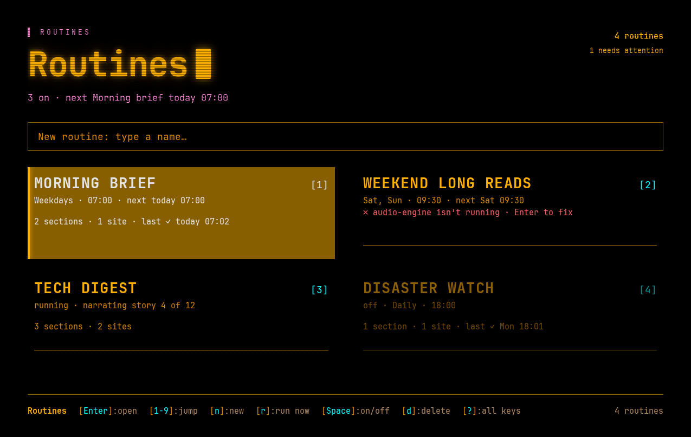
n puts the cursor in the bar; a routine exists once it has a name.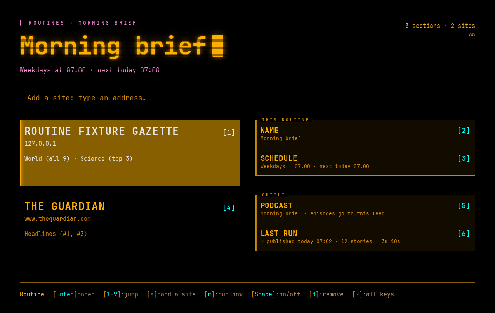
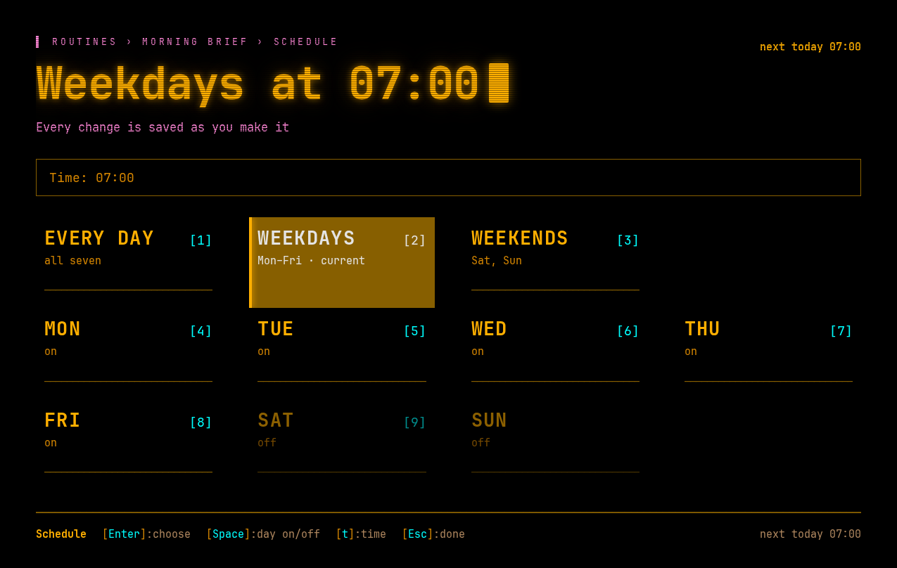
t edits the time in the bar. The title is the result, updated as you go.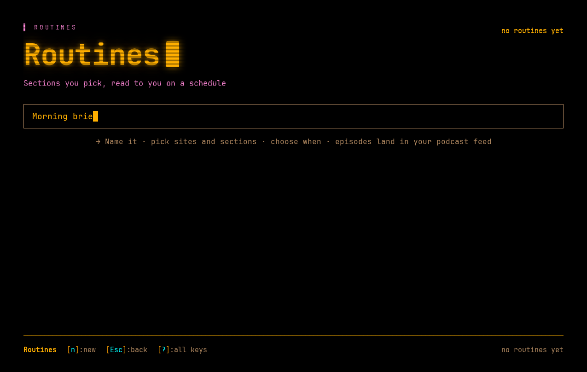
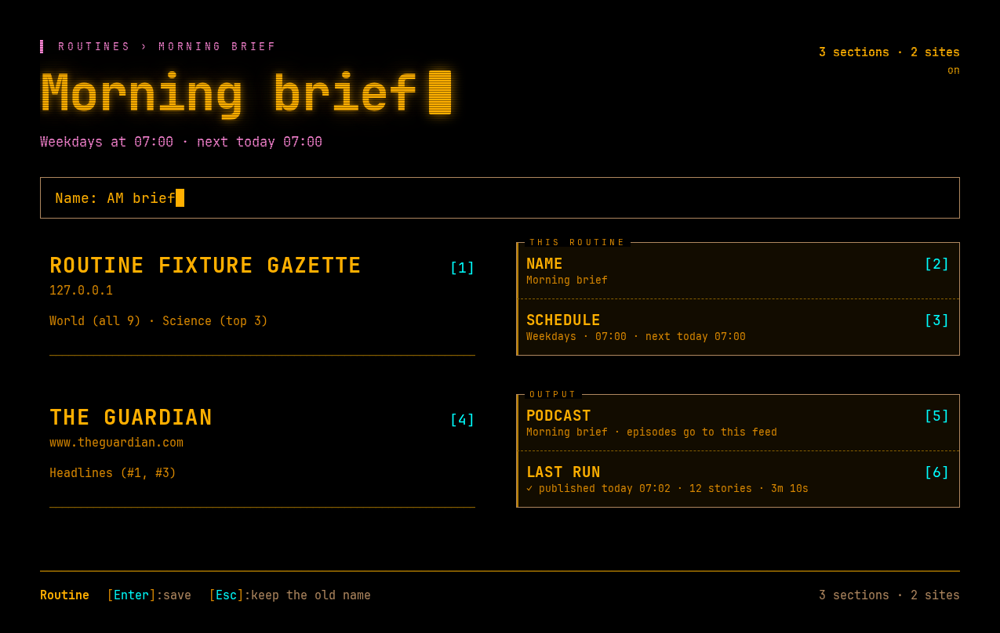
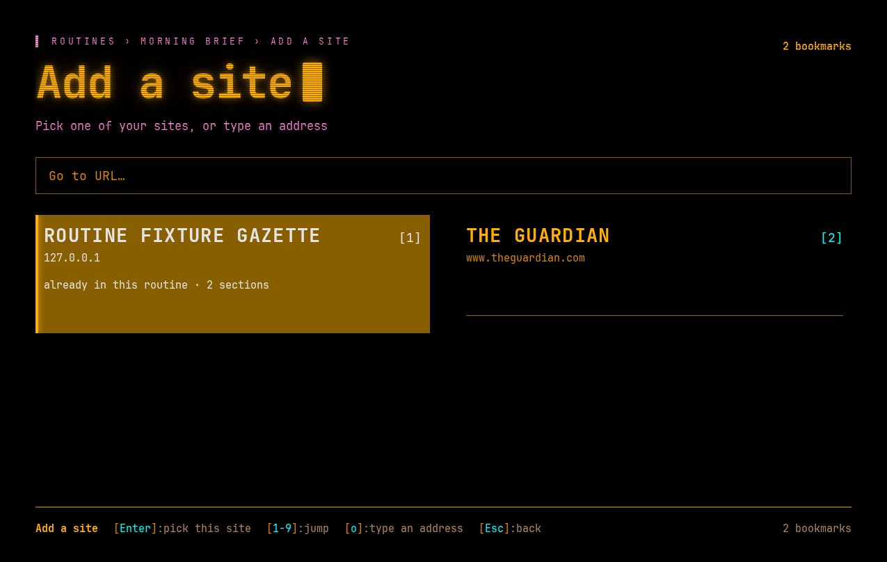
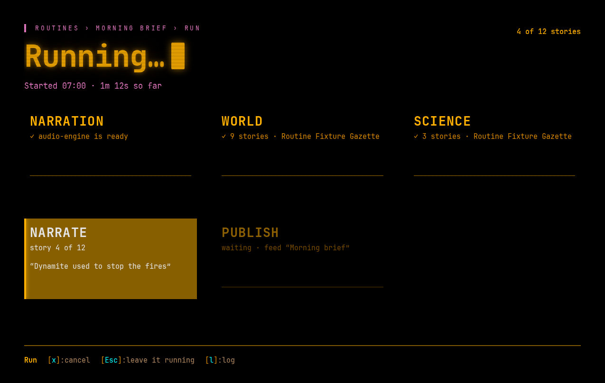
x cancels, Esc leaves it running.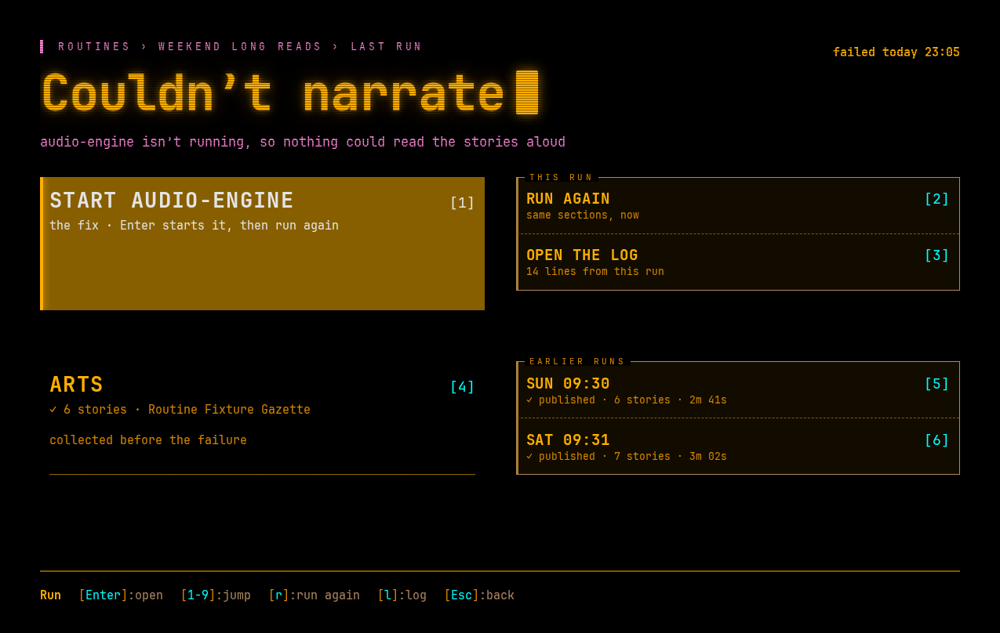
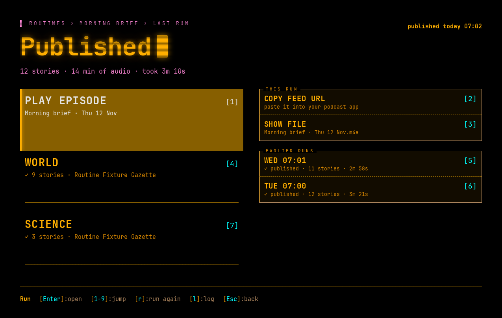
The plan
Each slice is a bead under the epic. Each is closed by driving the real shell under a virtual display, doing what a user does, and reading the screenshots. The atlas probe re-shoots every routines screen for before and after.
| Slice | What changes | Fixes | Closed when |
|---|---|---|---|
| R0g5xz3 | Screen atlas probeSeeds four routines, walks every routines screen, shoots each. | — | Done. 62 shots, all read; the before shots above come from it. |
| R16ifpp.1 | A routine, built from launcher tilesReplaces the terminal editor. Site tiles, “This routine” and “Output” boxes, the bar for typing, breadcrumb, launcher footer, in-pane confirm. Same slots drive the plain-terminal grid. | L1 L2 L3 L6 L8 W7 K1 | Open a routine: the shot matches the target render. Move with arrows and digits, rename in the bar, remove and reorder a site; each visible in the next shot. |
| R26ifpp.2 | Schedule as one tile screenPreset tiles, day tiles, time in the bar. The three terminal cards go. | W1 | Change weekdays 07:00 to Sat+Sun 09:30 on that one screen; the title, the routine and its home tile show the new next run. |
| R36ifpp.3 | Run view: watch, stop, listenStage tiles, action tiles, earlier runs in a box. Step-level progress and cancellation in the run pipeline. r behaves the same everywhere. Episodes titled by date. | W3 W5 W6 W9 K2 K3 | Run with the fake engine: stages tick, x stops it, Esc leaves it running and the home card shows progress; a finished run plays and copies its feed URL. |
| R46ifpp.4 | Home as launcher tilesRoutine tiles in capitals with jump digits, summary in the tagline, count top right, next-to-run order, the bar for new, launcher footer, real empty state. | L4 L5 W8 | Atlas home shots with 0 and 4 routines match the target renders; Enter on a failed tile lands on its fix. |
| R56ifpp.5 | Create without leftoversName typed in the bar, nothing saved until Enter, then straight to an Add a site screen that shows only sites. | L7 W1 W2 | Esc at the name leaves no routine; a full create is five screens, all pane. |
| R66ifpp.6 | Missed runs catch upA slot missed while the app was closed runs at next open, once, same day. Copy says so. A miss that could not be caught up is flagged. | W4 | Start the app after a due slot: the run starts, and the card reads “ran late”. |
| R76ifpp.7 | Keys, help, g sd removes everywhere, x cancels a run, ? lists the keys of the screen you are on. The g s chooser draws in the story pane. | K1 K4 K5 | ? on each routines screen lists that screen’s keys; g s chooser visible over the stories. |
Order: R1 with R6 alongside (no shared files), then R2, R3, R4, R5, R7. R1 fixes the pane contract the rest build on. Beads live under epic workspace-6ifpp.
One call that is yours: R6 makes a run that was missed while the app was closed start when you next open it. Today it is silently skipped. If you would rather keep skipping, R6 ships only the honest wording and a “missed” flag.